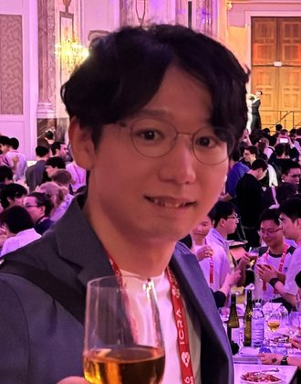

| プロフィール | 最新情報 |
| 研究内容 | 経歴 |
| 受賞歴 | 論文・業績 |
| リンク | 連絡先 |
| 名前 | 吉満 悠平(よしみつ ゆうへい) Yuhei Yoshimitsu |
|---|---|
| 所属 | 九州工業大学 |
| 身分 | 日本学術振興会 特別研究員(PD) |
| 学位 | 博士(工学) |
| 専門 | ロボット工学、制御理論、ロボットシステム |
| 得意分野 | 機械・電気・ソフトの全部。一番得意なのは機械 |
| 出身大学 | 鹿児島大学(機械系) |
| 2026年4月 | 日本学術振興会 特別研究員(PD)に採用されました。 |
|---|---|
| 2026年3月 | 九州工業大学にて博士(工学)を取得しました。 |
| 2026年11月 | ホームページを開設しました。 |
■ アンドロイドアームの開発
バックドライバビリティの高い空気圧アクチュエータやQDD(準ダイレクトドライブ)モータを用いて、人のように柔らかく動くアンドロイドアームを開発しています。
■ 対話を通じた運動指示
言葉による対話でロボットに動きを指示する方法と、その応用を研究しています。
■ 触覚センサとヒューマンインタラクション
触覚センサを実装したロボットによる、人とのふれあいを研究しています。
■ 博士研究:テンセグリティマニピュレータ
張力部材と圧縮部材からなるテンセグリティ構造を用いたマニピュレータを研究しました。
■ キーワード
オブザーバベース制御、剛体ダイナミクス、CANによるモータ制御、接触力推定
| 2017年 | 鹿児島大学 入学(機械系・ロボコンサークル所属) |
|---|---|
| — | 九州工業大学 大学院 進学 |
| 2026年1月 | 日本学術振興会 特別研究員(DC2) |
| 2026年3月 | 九州工業大学 博士(工学)取得 |
| 2026年4月 | 日本学術振興会 特別研究員(PD) |
■ 学術論文(査読付き)
■ 国際会議(査読付き)
■ その他
最新の一覧は ORCID をご覧ください。